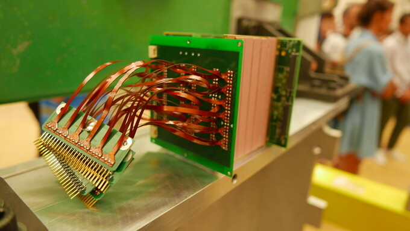
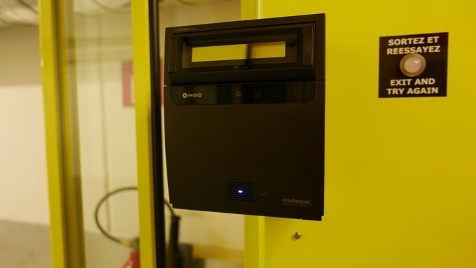

Die Open Days fanden am Samstag und Sonntag 14./15. September 2019 statt, wir sind am Freitagabend gegen 17:30h losgefahren und kamen gegen 23:30h in Prévessin-Moëns an. Der Ort liegt im Inneren des Beschleunigerrings auf französischer Seite, hier hatten wir ein günstiges Hotel.
Als wir ankamen gab es schon eine lange Schlange am Einlass, es war aber alles sehr entspannt und alle Besucher waren gut drauf. Nach ca. 20min hatten wir dann Zugang zum Gelände.
Die Gelände ist wirklich groß und in fast jedem Gebäude gab es etwas zu sehen.

Hier sieht man den Beschleunigerring vom LHC-Experiment - unten erkennt man Meyrin. Der Ring, in dem sich der LHC befindet, hat eine Länge von 26,7km und eine Breite von 3,8 Metern. Er wurde in den 80ern für das LEP-Experiment gebaut und liegt in 50-175m Tiefe. Seit 2008 findet dort das LHC Experiment statt.

Der erste Beschleuniger ging 1957 am CERN in Betrieb, der CERN-Komplex besteht mittlerweile aus vielen unterschiedlichen Teilen, Beschleuniger für Protonen, Ionen, Antiprotonen etc.

Hier ist der Einlassbereich in Richtung ATLAS zu sehen, die Skulptur zeigt Formeln und Forscher aus der ganzen Welt. Am Samstag gab es hier bis zu 3h Wartezeit, da jeder in die ATLAS-Werkstatt bzw. in den Beschleunigerring wollte. Wir haben das ausgelassen und sind auf eine der vielen Touren gegangen.
Unser erster Besuch war im “Crystal laboratory” dort hat uns Nikolaus gezeigt, wie verschiedene Szintillator Kristalle leuchten und wie sie im CMS Detector genutzt werden.
Nikolaus war einer der vielen CERN-Mitarbeiter, die freiwillig geholfen und ihre Arbeit vorgestellt haben - man konnte ihn deshalb auch alles mögliche fragen. Der einzig limitierende Faktor war die Zeit, beim letzen Open Days kamen 70.000 Besucher, dementsprechend waren die Führungen zeitlich getaktet.
Wir hatten bei der Registrierung leider keinen Platz mehr für die beliebten Besuche im Beschleunigerring bekommen. Nikolaus gab uns den Tipp, am Sonntag zeitig zum CMS zu fahren (auf der anderen Seite des Beschleunigerrings) und uns dort vor Ort zu registrieren.


Einige der Komponenten die beim CMS zum Einsatz kommen.
Hier sieht man einen der Szintillator-Kristialle, sie sind quasi die einzelnen Pixel des Sensors.
Mehrere dieser Zellen werden radial um den Kollisionspunkt der Teilchen angebracht, um die Trajektorie der entstehenden Partikel (Protonen, Pionen oder Kaonen) zu messen. Trifft ein Partikel auf den Kristall, wird ein Lichtblitz erzeugt, den man dann über Photomultiplier detektiert.
Nikolaus' Doktorarbeit beschäftigt sich damit, die Auslesegeschwindigkeit zu erhöhen, so dass man zeitlich besser aufgelöste Messungen bekommt. Das geschieht zum Beispiel in dem man das Kristallmaterial durch Dotierung verändert.

Als nächstes ging es zum MEDICIS Punkt. Das Ziel ist hier, Radioisotope für Medizinanwendungen (SPECT/PET-Scan, Strahlentherapie, Radionuklidtherapie) zu erzeugen. Vadim, ein junger Mitarbeiter, der gerade dabei ist, seinen Doktor zu beenden, zeigte uns einen Laserexperiment-Aufbau, der verwendet wird um die bei der Kollision entstehenden Teilchen/Isotope zu trennen.
Die Teilchen kann man über das Masse-zu-Ladung-Verhältnis trennen. Entstehen bei der Kollision Isotope, müssen sie selektiv ionisiert werden, um sie von anderen Isotopen mit gleicher Masse trennen zu können. Dazu nutzt man Laser, Vadim hat daran gearbeitet, die Laser optimal abzustimmen.

Das Bild oben zeigt das ISOLDE Experiment mit dem solche Ionenstrahlen erzeugt werden.
Im ISOLDE-Gebäude und an vielen anderen Stellen wird immer wieder vor der entstehenden Radioaktivität gewarnt, die Wissenschaftler, die sich während des Betriebs dort aufhalten, tragen unterschiedliche Arten von Dosimetern.

Mittagessen für 10€ im Betriebsrestaurant vom CERN, das Essen hat super geschmeckt und der Ausblick war fantastisch. (Ein Bier an der Promenade beim Genfer See kostet schlanke 8€).
Nächster Anlaufpunkt war der LINAC 4, das ist ein Linearbeschleuniger, der negative Wasserstoffionen beschleunigt, die als Grundlage für die bei ISOLDE verwendeten Protonenstrahlung dienen.
Am hinteren Ende der blauen Boxen (hergestellt von Thales) sieht man die quadratischen Hohlleiter, die verwendet werden um die elektromagnetischen Wellen 12m unter die Erde zu leiten. Technik die auch in Radiomasten oder bei Radar verwendet wird, nur eine Nummer größer.
Die elektromagnetischen Wellen laufen durch Kupferleiter, die dann die Wasserstoffionen durch das Wechselfeld beschleunigen. Die Rippel sind genau auf das zu beschleunigende Wasserstoff-Ion abgestimmt, die Wellenform ändert sich über die Länge des Bauteils.

Alles läuft dabei im Hochvakuum ab.
Der oberirdische Teil des LHC … nein, das sind nur Heizungsrohre ;)
Am CERN gibt es Gastwissenschaftler aus 85 unterschiedlichen Nationen, hier ist eine Statue die von der indischen Atomkommision gestiftet wurde.


Es gab auch eine Station mit Retrospielen auf alten Computern. Insgesamt war alles sehr gut organisiert, es gab sogar Live-Bands von Alumnis.
Das CERN hat um 19:00h geschlossen, so dass wir noch Zeit hatten uns Genf anzusehen.

Am nächsten Tag sind wir nach Cessy in Frankreich gefahren, um uns den Compact Muon Solenoid (CMS) anzusehen.
Cessy ist ein kleiner Ort, in dem nichts darauf hindeutet, dass hier Spitzenforschung stattfindet. Tim Berners Lee wohnte in Cessy, als er “das Internet erfand”.

Hier sieht man die oberirdische Halle von CMS, der Detektor befindet sich in 100m Tiefe, ist 21m lang und hat einen Durchmesser von 15m.

Wir waren zeitig genug da und konnten uns ohne Probleme für eine unterirdische Tour registrieren

Unser Guide (dunkler Helm) war super motiviert und hatte richtig gute Laune.

Da der LHC abgeschaltet ist, können jetzt Upgrade- und Wartungsarbeiten durchgeführt werden. Hier sieht man die einzelnen Module (später sind sie zusammengeschoben).

Die Größe ist total beeindruckend, der Detektor besteht auf 15 Schichten und wiegt insgesamt 14000 Tonnen.

Der Magnet im Inneren ist 13m lang und hat einen Durchmesser von 6m, er ist der stärkste Magnet, der bisher gebaut wurde und wird bei -268,5°C betrieben. Die Geschwindigkeit der Teilchen beim Zusammenstoß unterscheidet sich nur um 3m/s von der Lichtgeschwindigkeit.
So ein Kabelmanagment wünsche ich mir für zuhause.

Im Zugangsbereich herrscht eine hohe Sicherheitsstufe, hier sieht man einen Irisscanner.
Das System ist redundant mit einer Schließanlage ausgestattet. Da auch hier Radioaktivität entsteht, muss sichergestellt werden, dass die Kammer bei Betrieb menschenleer ist.

Hier ist die Triggerschaltung. Während der Beschleuniger auf Spitzenleistung läuft, gibt es pro Sekunde eine Billion (10^12) Protonen-Protonen Interaktionen. Der Trigger wertet diese aus und reduziert sie auf 100 interessante Events, die dann abgespeichert werden.


Nach dem Rundgang haben wir uns an der Oberfläche die unterschiedlichen Sensoren nochmal im Detail angesehen.
Insgesamt war es ein toller Ausflug, den man unbedingt mal gemacht haben sollte.
Tipp von Markus: für ein Subset der Führungen könnt ihr euch noch anmelden, das geht Januar bis März (wegen Wartung keine Experimente) und jetzt im “long shutdown”. https://visit.cern/tours/guided-tours.
Update: Ein/zwei inhaltliche Ungenauigkeiten zum MEDICIS-Abschnitt wurden behoben und ein Bild vom Laseraufbau eingefügt - Danke @Vadim!